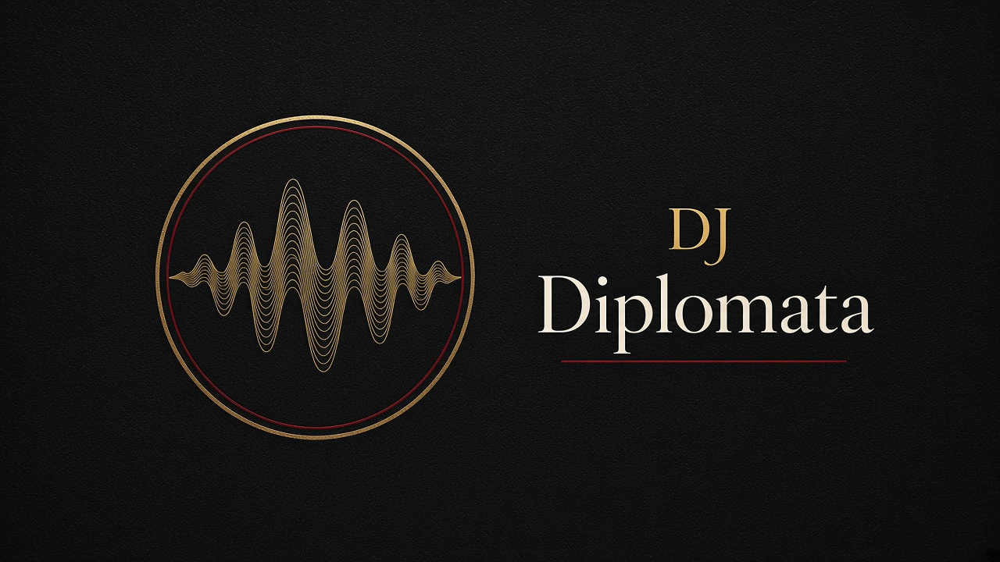
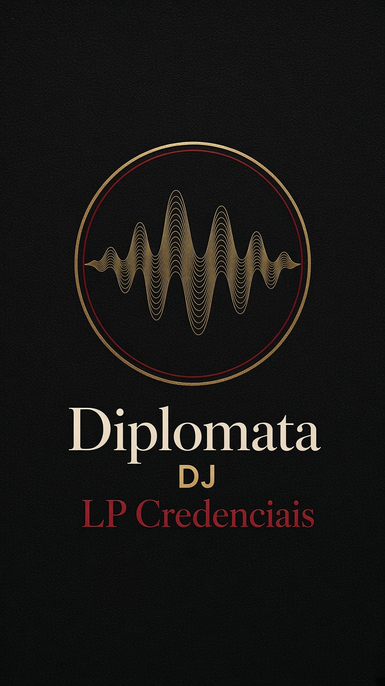
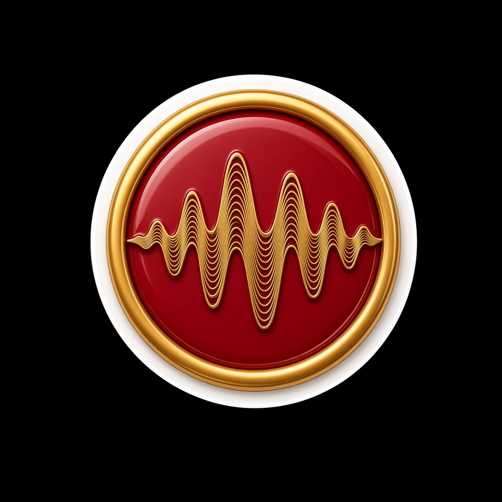

Imprensa
Uma p√°gina para levar
Texto curto para story, texto médio para release e texto longo para quem vai editar. A cópia pede permissão de campanha. Os arquivos .txt estão na pasta press.
DJ Diplomata é DJ de Curitiba. O trabalho é de pista: club, open air e festa privada na capital e na região metropolitana. O press kit reúne as fotos do artista, criativos de campanha e o mapa das casas da cidade. A LP Credenciais está em lançamento e ainda não entrou nas plataformas.
Curitiba, 2026. DJ Diplomata abre a campanha da LP Credenciais com um press kit de foto real e selo próprio. O território é a capital e a região: Club Vibe no Batel, Park Art em Pinhais, Pedreira Paulo Leminski e a noite do Centro. Booking pelo formulário do site. Instagram oficial ainda sem grade pública confirmada.
DJ Diplomata mora em Curitiba e trata a noite como acordo entre casa, público e set. As fotos de imprensa cobrem estúdio, cabine, praia e arquibancada. Os criativos de campanha foram gerados a partir desse rosto, sem estampa, e não substituem o original. Credenciais organiza o lançamento em seis títulos de trabalho. Não há faixa no Spotify nesta versão do site, e nenhum homônimo de rede foi assumido como canal oficial.
Identidade
Ouro de selo, carmim de uma linha só, preto de cabine, papel de release. O nome vai em Cormorant Garamond, como cabeçalho de carta. Syne segura os títulos de seção. Outfit lê o corpo.
- Preto
#0a0908 - Ouro
#d4b483 - Carmim
#a32045 - Papel
#f3eee6

Redes e raster
Open Graph do site: og-diplomata.jpg (16:9). Story: story-identidade.jpg. LP quadrada: lp-credenciais.jpg.





Ficha r·pida
| Nome | DJ Diplomata |
|---|---|
| PraÁa | Curitiba e regi„o metropolitana |
| Formatos | Club, open air, after, festa privada |
| LP | Credenciais, tÌtulo de trabalho |
| Fotos | Sete arquivos em assets/images/artista |
| Marca | logomarca, logo horizontal, identidade |
| Textos | bio curta, bio longa, ficha, legendas |

Legenda de estreia
DJ Diplomata. Curitiba. Club, open air e festa da cidade. A LP Credenciais est√° em campanha. Booking no site.